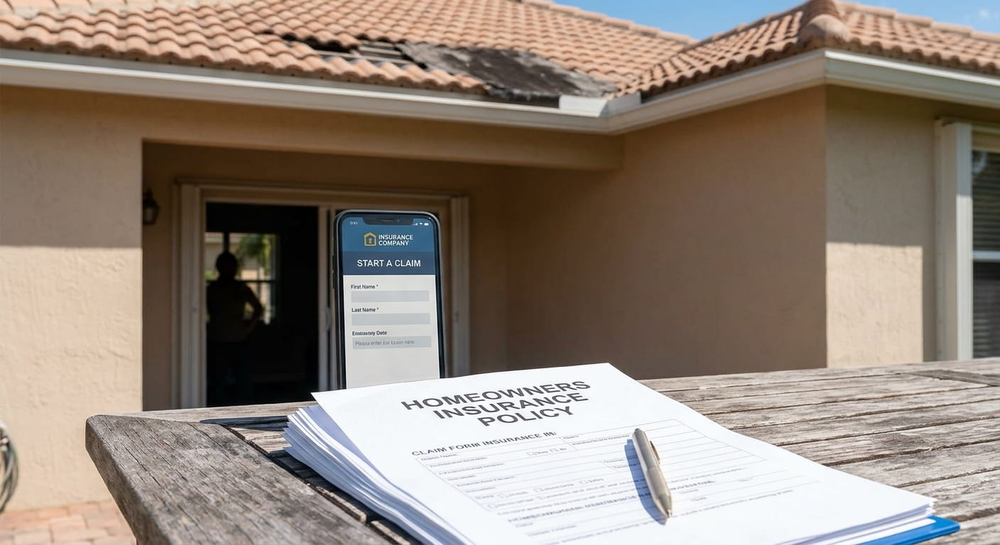

Roof Replacement Cost in Miami: What Really Drives the Price
Searching for roof replacement cost in Miami can be frustrating because online calculators often turn a complex construction project into one headline number. A useful estimate has to reflect the actual roof, the materials being proposed, the condition underneath the existing covering, access to the property and the requirements that apply to the installation.
That is why two homes that look similar from the street can receive very different replacement estimates. The objective is not to find a universal Miami price; it is to understand what is included in a project and whether the proposed scope makes sense for the property.
Roof size is only the beginning
Roof area is an important cost driver, but it is not the only measure of difficulty. A simple roof with easy access may require less labor than a smaller roof with multiple slopes, valleys, penetrations, skylights, wall intersections or limited staging space.
The shape also affects waste, flashing details and installation time. This is one reason homeowners should compare estimates based on the scope of work rather than comparing only a dollar-per-square-foot number.
Roofing material changes the project
Asphalt shingles, tile, metal and low-slope membrane systems have different product costs, installation methods and supporting components. The right comparison is not simply which material is cheapest; it is whether the proposed system is appropriate for the building, climate and applicable requirements.
If you are comparing materials, our guide to tile versus shingle roofing in Miami explains the trade-offs homeowners should consider. You can also review our Miami roof replacement service page for the broader project process.
The existing roof can change the scope
One of the biggest sources of uncertainty is what is discovered when the existing covering is removed. Damaged or deteriorated decking, flashing problems or other concealed conditions can require additional work. A responsible estimate should explain how such conditions will be handled rather than pretending that every roof will be identical.
Florida's Hurricane Retrofit Guide specifically recommends exposing and evaluating the roof deck during re-roofing so damaged sheathing and fastening issues can be addressed. Read the official Florida re-roofing guidance.
Why Miami-Dade requirements matter
Miami-Dade roofing projects can involve local permit processes, product approvals and high-wind requirements. Those factors can affect the products selected, documentation, inspections and installation details. A national roofing calculator may not account for them.
Homeowners can verify current requirements through Miami-Dade County roofing permit information and the county's Product Control resources. Florida also maintains current Florida Building Code resources.
Labor, removal and access are real costs
A roof replacement is not only the purchase of roofing material. Labor includes preparation, removal when required, installation, flashing, cleanup and site protection. Difficult access can add time and logistics, especially where equipment or material staging is limited.
Disposal is another part of the project that should be understood. Ask whether tear-off, hauling, disposal and final cleanup are included. A low initial estimate that leaves major components outside the scope may not remain the lowest price after the project is fully defined.
How roof condition changes the repair-versus-replacement decision
Not every damaged roof needs replacement. A localized problem on a relatively healthy system may be better handled with repair. Repeated leaks, widespread deterioration or substantial storm damage can point in the other direction.
Before approving replacement, read our Miami roof inspection guide and our guide to recognizing when a new roof may be appropriate. A project decision should be based on condition, not simply on the presence of one leak.
How to compare Miami roofing estimates
Ask every contractor to describe the same basic scope: what is being removed, what material is being installed, how damaged underlying areas will be handled, which flashing details are included, whether permits are part of the process, and what warranty terms apply. This makes estimates easier to compare because you are comparing projects rather than numbers.
Also ask what is excluded. If an estimate assumes that all decking is sound, for example, understand how additional work would be priced if damaged areas are found.
Frequently asked questions
Can an online calculator tell me my exact roof replacement cost?
No. It can provide a rough starting point, but a property-specific estimate needs information about the actual roof and proposed installation.
Is a more expensive roofing material always better?
No. Material choice should be based on the property's needs, installation requirements, durability expectations and budget rather than price alone.
Should I get an inspection before requesting estimates?
An inspection can help you understand the roof's condition and make it easier to evaluate whether contractors are recommending similar scopes.
Make the estimate decision easier
The best roof replacement estimate is the one you can understand. Look for a clear scope, realistic assumptions and an explanation of why the proposed system fits the property. If you need help evaluating your roof, continue through the Miami roofing resource center or request roofing help.
Sources and further reading
- Miami-Dade County — Roofing Permits
- Miami-Dade County — Product Control
- Florida Hurricane Retrofit Guide — Re-Roofing
Related Miami roofing guides
Miami roof repair · Roof inspection · Roof insurance claims · More roofing advice